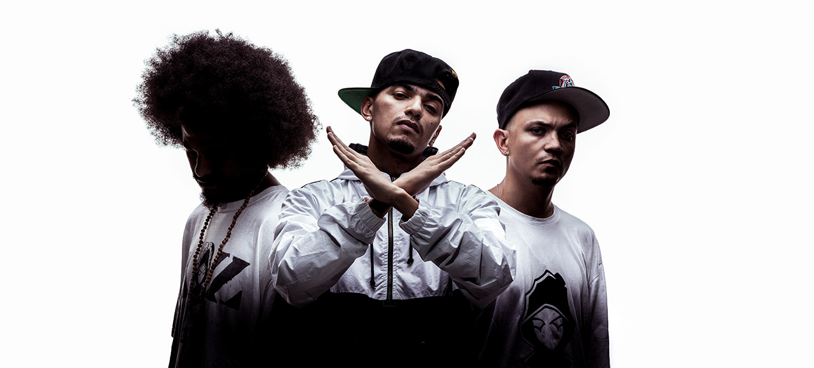
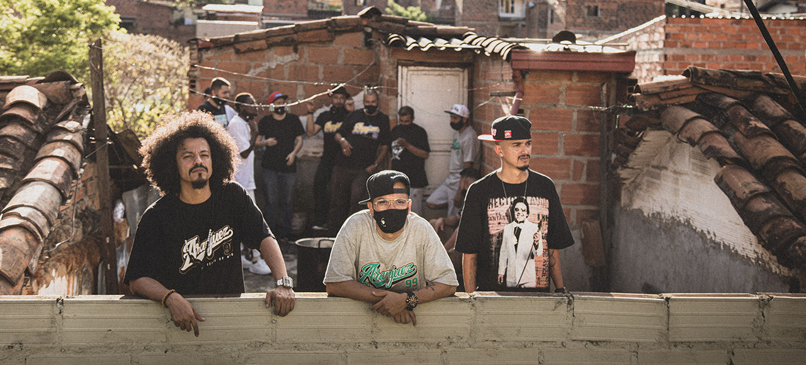

BIOGRAFÍA
BIOGRAFÍA
A-Z son rap en estado puro, artesanos nobles que encontraron en las rimas la manera de resistir el tránsito de los días y el apuro despiadado de la calle, dando cuenta de la historia en cada letra, son genuinos hijos de los 80’s cuando lo único que se podía hacer era embolatar con músicas los estruendos agresivos de una ciudad en destrucción, son tres artistas nacidos en un barrio popular, acunados desde niños por los sonidos inagotables de géneros suburbanos tan diversos como el soul, el blues, la salsa, los boleros, el Funk y tantos más que luego se volvieron influencias
En los 90's les llegó la amistad y con ella el Rap, ambos como un martillazo fulminante en la cabeza encaminaron la furia y la rebeldía propias de la época hacia un proyecto asombroso e idealista donde pudieron mezclar las músicas constitutivas de su crianza con las letras inteligentes y transgresoras que venían escribiendo, así nació un primer esbozo llamado ArneZ, qué a poco de surgir desapareció pero puso las cosas en su lugar y juntó en un mismo ideal a Gambeta, Kaztro y Fazeta, agrandando el intermedio de letras entre la A y la Z, que al igual que el abecedario y el barrio que los vio nacer, serían el principio y el final de su nombre y de sus destinos: AlcolirykoZ.
Llevan más de una década haciendo funcionar una maquinaria musical que poco a poco se ha convertido en la banda sonora indispensable para entender la cotidianidad urbana de estas últimas generaciones, con disciplina e integridad han creado un producto definitivo que logró sacar de su histórica tradición marginal al género y siendo profundamente locales lograron dotarlo de un contenido universal.
Gilmer Mesa.
VIDEO CLIPS
(En vivo)
(Video oficial) - Prod. El Arkeólogo
(Prod. El Arkeólogo)
(Prod. El Arkeólogo)
(Video Oficial) - (Prod. El Arkeólogo)
(Prod. El Arkeólogo)
 DISCOGRAFÍA
DISCOGRAFÍA
Aranjuez
Diseño: Mango Marín
- Aguanilé
- La caza de Nariño (con Junior Zamora)
- No esta en venta
- Reflujo (con Estee Nack)
- Piñata en el 301
- Aranjuez
- Baldor
- Síntomas de Popeye (con Titó y Dj Skizz)
- Pambelé
- El tour de sing sing (con Tote King)
- Todo lo Bueno tarda
En letras mayúsculas reedición
Diseño: Mango Marín
- Intro
- Testigos oculares
- Acrobacias
- Monumento a la crisis
- Despierta
- La eterna
- Los genios de la botella
- El reino de los suelos
- La típica
- Fruko y sus presos
Servicios ambulatorioz
Diseño: Mango Marín
- Intro (Regaño)
- Equipo de Carretera
- La penultima cena (con Rocca)
- N.A.D.A
- Género rural (con Rulaz Plazko)
- Changó
- Normal
- Los sospechosos de siempre (Con La Etnnia)
- Laura ronda
- El malo de la película (con Polimnia)
- Hazmelo Rap
Efectos secundarios
Diseño: Mango Marín
- Efectos secundarios (Intro)
- El imaginario
- El imaginario
- La cantaleta
- No hay flores en venus (con Lianna)
- Artes verbales
- Antes del meridiano
- El salón de la injusticia
- La noche (con Aerophon)
- Anestesia local (Episodio 1)
- Anestesia local (Episodio 2)
- Taxidermia (con No Rules y Dj Dmoe)
- El ritual
- Otra canción larga
El despilfarro (2011)
Diseño: Paulo Betancur
- Terapia de grupo
- El despilfarro
- Let my people
- Las malas lenguas
- Feliz si es raro
- El sexto sentido
En letras mayúsculas (2007)
Diseño: Mango Marín
- Intro
- Testigos oculares
- Acrobacias
- Monumento a la crisis
- Despierta
- La eterna
Viejas recetas, remixes y otras rarezas
Diseño: Paulo Betancur
- Plato de entrada (Fa-zeta)
- Agacha
- Erre con erre
- Los genios de la botella (Remix Gambeta)
- Rifo los lunes (con Gordo Sarkasmus)
- Los genios de la botella (Remix Kaztro)
- Aero soul
- La eterna (Remix)
- A mijazz (Remix)
- Mi barrio es mi estado (con Julián Monsalve)
La Revancha de los Tímidos (2010)
Diseño: Paulo Betancur
- Así no mas
- La revancha de los tímidos (con Jannyval)
- Comediantes de velorio
- Clapzz
- La danza del miedo
- A mijazz
- El casino
- Quien no? (con Mc Julo y Mc Mago Real)
- Una resaca más
- Rap, sexo y saxofón
- El poder de la palabra
 EVENTOS
EVENTOS
BOGOTÁ
4/FEB/2023
Fecha de Inicio: 4 Febrero 2023 Ciudad: Bogotá
Lugar: Teatro Jorge Eliécer Gaitán
Evento para mayores de 12 años
BOGOTÁ
15/JUL/2023
Fecha de Inicio: sábado 15 de julio de 2023 Ciudad: Bogotá
Hora: 8PM
Lugar: MOVISTAR ARENA
Evento para mayores de 12 años